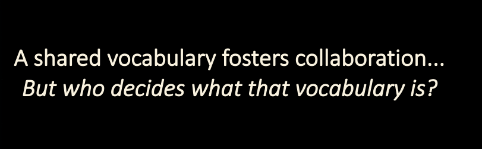

🧠 Grammar of Meaning¶

🧬 Meaning as Cultural Infrastructure¶
At the heart of any coordinated action is shared meaning — a common understanding of values, intentions, patterns, and distinctions. Without this, no agreement holds, no service lands, and no relationship endures.
The MAP’s Global Meme Pool provides the infrastructure for memetic coordination: the evolution and stewardship of meaning across diverse agents, cultures, and scales.
Here, memes are not internet jokes or ideological slogans. They are living building blocks of cultural DNA — representing:
- Principles
- Values
- Patterns
- Distinctions
- Commitments
- Coordination structures
- Semantic scaffolds
They are held, evolved, and expressed through relational participation — not through ownership, but through stewardship.
📚 What Is a Meme in MAP?¶
A Meme is a cultural unit — a named idea, distinction, or pattern — capable of being referenced, stewarded, expressed, and evolved.
Memes may be simple labels (like #consent or #bioregionalism), complex frameworks (like Ostrom’s Principles), or structured coordination models (like a specific governance scaffold).
Memes can:
- Be included in MemeGroups
- Participate in MemePlexes (clusters that spread well together)
- Be expressed in books, rituals, or diagrams
- Be exhibited or inhibited by agents (via LifeCode / MemeticSignature)
- Be linked to other memes through named, definitional relationships
These links form a web of meaning — the semantic layer of MAP — which evolves through consent, use, and stewardship.
🔍 Semantic vs Semiotic Layers¶
MAP distinguishes between:
| Layer | Description | Examples |
|---|---|---|
| Semantic | The meaning of a meme — its relationships, principles, and distinctions | “Solidarity” as a value, defined in a Meme |
| Semiotic | The expression of that meme — how it shows up in language, images, media | A poem, badge, ritual, or video expressing “Solidarity” |
A single meme may have many semiotic expressions. These can be:
- Private (notes, annotations)
- Shared (comments, explanations)
- Referenced (in Agreements, Offers, or LifeCodes)
- Never modified — memes themselves are immutable once defined
🌱 A Local-First, Stewarded Web of Meaning¶
Meaning doesn’t start global. It starts local — in one agent’s I-Space.
Agents can:¶
- Reference an existing meme
- Annotate it with local context
- Derive a new meme from it (additive only)
- Propose new meanings to stewardship groups
Meme stewardship happens in a StewardshipSpace — a group of agents caring for a meme (or meme group). They:
- Review proposed changes
- Release new versions
- Publish selected memes to one or more ReferenceSpaces (e.g. PlanetarySpace)
Each version of a meme includes: - A semantic version number (Patch / Minor / Major) - A transitive closure of definitional relationships — this is what defines that version’s meaning
🌀 The Role of Memetic Signatures¶
Every Agent in the MAP carries a Memetic Signature — a set of memes they consciously exhibit or inhibit.
Memetic Signatures are how agents express identity, alignment, and intent.
They power:
- LifeCodes
- Offer alignment
- Trust channels
- Cultural resonance
A Memetic Signature is not a brand. It’s a living declaration of what you stand for, what you steward, and what you seek.
🔄 How Meaning Evolves in MAP¶
MAP supports a collaborative grammar for memetic evolution:
- Reference — Start with an existing meme
- Derive — Create an additive variant in your I-Space
- Push — Submit your derived meme to a StewardshipSpace (via a Pull Request)
- Govern — Stewards evaluate, discuss, and accept/reject changes
- Release — Accepted memes receive new semantic versions
- Publish — Selected memes are made available to ReferenceSpaces
There is no central authority for meaning.
Just nested membranes, additive derivation, and consentful publishing.
This allows:
- Forking and rejoining of memetic threads
- Parallel proposals without merge conflicts
- Cultural coherence without uniformity
🛠 The Grammar, Not the Content¶
“MAP doesn’t tell you what to believe.
It gives you a place to name, share, remix, and align what you find meaningful.”
The Grammar of Meaning enables:
- Durable definitions without coercion
- Clear provenance and semantic stability
- Open-ended creativity within communal integrity
It’s not a marketplace of opinions.
It’s a commons of care — where ideas are not owned, but grown.
✅ Summary: Meaning as a Commons¶
| Element | Role |
|---|---|
| Meme | A named unit of cultural meaning |
| MemeGroup / MemePlex / MemeFamily | Ways to organize and relate memes |
| MemeticSignature | What an Agent exhibits or inhibits |
| StewardshipSpace | Where memes are governed and evolved |
| ReferenceSpace | Where memes are published and made available |
| Versioning | Reflects additive or breaking semantic changes |
| Pull Requests | Allow new proposals to be considered for inclusion |
MAP turns culture into a composable protocol.
It makes shared meaning iterable, stewarded, and remixable —
so that agents across differences can align in motion.
📎 See Also¶
-
Appendix: Grammar of Meaning – Protocol Specification
(for developers, stewards, and governance designers) -
Section: Global Meme Pool Ecosystem
(for narrative introduction to memes, stewards, and memetic flows)